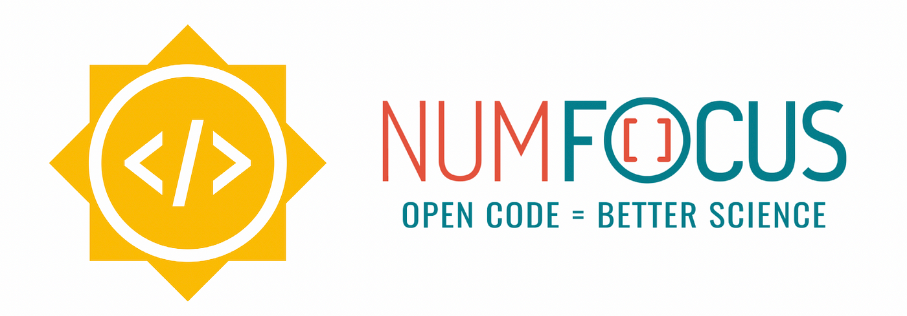

GSoC '24 Final Report
Google Summer of Code 2024 Report
This report summarizes the work done by me (Kishan Ved) for Google Summer of Code 2024 with the NumFOCUS organization, on the project Open Science Labs: PyDataStructs: Add a C++ Backend for tree data structures and their algorithms. Weekly reports are available here: GSoC BLogs
This report is available as a GitHub Gist, it contains more revisions. View here.

About me
I am Kishan Ved, an undergraduate student at the Indian Institute of Technology Gandhinagar (IIT Gandhinagar), India, in the department of Computer Science and Engineering.
About PyDataStructs
PyDataStructs aims to be a Python package for various data structures in computer science. We are also working on the development of algorithms including their parallel implementations. To the best of our knowledge, PyDataStructs is the first well-designed library/package which has covered most of the data structures and algorithms.
Features:
-
A single package for all your data structures and algorithms - We have and are implementing many popular and useful data structures and algorithms.
-
Consistent and Clean Interface - The APIs we have provided are consistent with each other, clean and easy to use. We make sure of that before adding any new data structure or algorithm.
-
Well Tested - We thoroughly test our code before making any new addition to PyDataStructs. 99 percent lines of our code have already been tested by us.
So, you can easily rely on PyDataStructs for any data structure or algorithm you want to use without worrying about implementing it from scratch. Everything is just a few calls away.
GSoC Project Goals
My project involved adding a C++ backend for all tree data structures in PyDataStructs, a Python package for advanced data structures and algorithms. The user has an option to select either the Python backend or the C++ backend.
tree = RedBlackTree(backend=Backend.CPP)
For any data structure, the Python backend is developed first, and once completely tested and ready, its C++ backend is developed. Both the backends share full functionality and are completely compatible. The C++ backend is extremely fast, it executes codes 8-10 times faster. This enhances the computation speed, making it extremely valuable for scientific computing and high-performance applications.
Project Outline
I started working from the community bonding period itself, and this gave me a good headstart and allowed me to complete the project in 12 weeks. Here’s an outline of all the work I did:
Pre GSoC Work
| PR Description | Contribution |
|---|---|
| PR: Added Introsort algorithm | +127 |
| PR: Fixed version related bugs | +4 |
Community bonding period
| PR Description | Contribution |
|---|---|
| PR: C++ backend for Node, TreeNode, ArrayForTrees, BinaryTree and BinarySearchTree and all tree traversals implemented | +1,936 |
Coding Phase 1
| PR Description | Contribution |
|---|---|
| PR: C++ backend for Self Balancing Binary Tree | +328 |
| PR: C++ backend for Red Black Trees | +748 |
| PR: C++ backend for Binary Indexed Trees | +179 |
| PR: C++ backend for Splay Trees | +423 |
Coding Phase 2
| PR Description | Contribution |
|---|---|
| PR: C++ backend for AVL Trees | +488 |
| PR: C++ backend for Cartesian Trees | +254 |
| PR: C++ backend for Treap | +150 |
PR: C++ backend for all trees in binary_trees.py file complete | +72 |
| PR: Updated Documentation | +12 |
Contribution Stats:
Lines added: +4,709 (#2 contributor in terms of lines added)
Commits made: 11
Total merged Pull Requests : 11
Here’s a complete list of all my merged PRs
Speed results
Time taken for methods of Binary Search Tree class to execute in different backends:
Weekly reports
My Google Summer of Code blogs are available on my website: https://kishanved.tech/blog/
Future work
Some issues have been opened, these can be addressed. Refer PyDataStructs Wiki on GitHub for upcoming plans.
Learnings
Tech: Mastered the art of linking a Python code to a C++ backend by using the Python-C API to improve speeds greatly. Polished my C++ and Python coding skills.
GitHub: Learned various new commands, resolution of conflicts and merging branches for collaborative work.
Perseverance: GSoC taught me to read the documentation, be calm and perseverant. It’s difficult at the start but smoother ahead!
Thanks to my mentor Gagandeep Singh for his support and guidance. Thanks to Ivan Ogasawara and the team at Open Science Labs and NumFOCUS.
Enjoy Reading This Article?
Here are some more articles you might like to read next: